ICONCEPTOS BÁSICOS SOBRE ORGANIZACIONES Y ADMINISTRACIÓN
Etzioni: las organizaciones son unidades sociales deliberadamente construidas o reconstruidas para alcanzar fines específicos. Se caracterizan por la división del trabajo, del poder y de la comunicación; la presencia de centros de poder que dirigen y revisan la actuación; y la sustitución de personal. Etzioni incluye corporaciones, ejércitos, escuelas, hospitales, iglesias y prisiones, y excluye tribus, clanes, grupos étnicos, amigos y familias. Pfiffner y Sherwood: la organización es el patrón de formas en que muchas personas, demasiadas para el contacto cara a cara, se relacionan para llevar a cabo fines convenidos. Kliksberg: conjuntos de personas que se relacionan para lograr fines comunicados a todas, actuando coordinada y conscientemente, motivadas por sus propias necesidades e interactuando con el medio. El conjunto de relaciones entre las actividades de la organización constituye su estructura.
Definiciones de administración para memorizar: Fayol, "administrar es prever, organizar, dirigir, coordinar y controlar"; Taylor, "conocimiento exacto de lo que uno desea que los demás hagan y controlar que lo hagan en la forma mejor y más barata"; Simon, "el arte de conseguir que se hagan las cosas"; Follet, "el arte de hacer las cosas por conducto de las personas"; Drucker, "hacer más productivos a los recursos"; Gulick, conocimientos para entender relaciones, predecir resultados e influir en objetivos de hombres organizados en un propósito común; Kliksberg, ciencia que explica el comportamiento de las organizaciones y conjunto de técnicas para conducirlas. Las organizaciones nacen de las necesidades y deseos de sus creadores, que definen una misión (el "para qué"), fijan objetivos y aportan recursos. La división del trabajo genera actividades diferenciadas que requieren una estructura para coordinarlas, y recursos (financieros, materiales, informáticos, humanos) que deben ser productivos. Quien tiene la responsabilidad principal de administrar es el Gerente o Gerente General. La administración es además el "colchón" o "amortiguador" entre el ambiente cambiante y la estabilidad interna, mediante estrategias, planificación y control. Función básica: coordinar actividades y personas, usar criteriosamente los recursos y ajustarse eficaz, creativa y dinámicamente al ambiente.
↑ Volver al listadoIIEVOLUCIÓN HISTÓRICA DE LA DIRECCIÓN DE ORGANIZACIONES
La administración es la disciplina científica que provee herramientas para manejar organizaciones complejas; su evolución fue determinada por dos factores recíprocos: la tecnología y la cultura. Entre 1880 y 1920 ocurre la Segunda Revolución Industrial: el capital financiero se concentra junto al industrial y nace la gran empresa, instrumento para eliminar la competencia y controlar monopólicamente los mercados. La gran empresa se caracterizó por planificación detallada del trabajo, máxima división del trabajo para bajar la calificación, uso de mano de obra no desarrollada (mujeres y niños), incentivos y selección de innovaciones según su lógica económica. La dirección científica le dio la tecnología que necesitaba: la concepción mecanicista del operario (acción-reacción, intercambiable), la concepción formalista de la empresa (solo existe la estructura formal) y la concepción hedonista de la motivación (homo economicus movido por el dinero).
Paradigma Mecanicista (nombre dado por el Instituto Tavistock de Londres): ve la organización como una máquina de piezas precisas y coordinadas, con raíces también en el ejército prusiano (rangos, uniformes, órdenes, separación entre mando y asistencia). Su primer exponente fue Frederick Taylor con la "Administración científica", que atribuía las pérdidas a la lentitud deliberada, el carácter holgazán de los obreros, la falta de métodos racionales y el error de creer en la iniciativa de los trabajadores. Principios de Taylor: la organización del trabajo es facultad exclusiva del directivo (un sector piensa y programa, el otro ejecuta sin desvío); métodos científicos para hallar "the one best way"; seleccionar e instruir al personal con estudios de tiempos y movimientos; controlar el rendimiento; incentivos económicos como principal política de personal, con "trato duro" cuando fuese necesario. El Taylorismo fue resistido por obreros, científicos y hasta el Congreso de EE. UU., pero triunfó porque era la tecnología que necesitaban los monopolios; hoy se ve en la comida rápida. Tuvo dos etapas: la fusión con la producción en cadena de Ford alrededor de 1910 (Taylorismo-Fordismo) y su crisis a fines de los '70 por la caída de la tasa de ganancia. Max Weber llamó burocracia a las organizaciones que operan como máquinas: precisión, velocidad, claridad, regularidad, exactitud y eficiencia mediante división prefijada de tareas, supervisión jerárquica y reglas detalladas. Weber la consideraba la forma más racional y eficiente para cualquier sistema económico, pero reconoció su potencial de mecanizar la vida humana y erosionar la acción espontánea. La Teoría Clásica de Fayol también pertenece a este paradigma ("trabajar tan exactamente como sea posible a través de patrones de autoridad"). Según Gareth Morgan, el mecanicismo funciona bien con tarea lineal, entorno estable, producto repetido, precisión como premisa y parte humana obediente. Sus limitaciones: dificultad para adaptarse al cambio, burocracia sin límites, consecuencias no previstas (intereses de miembros sobre los de la organización) y efectos deshumanizadores en los niveles bajos ("éste no es mi trabajo").
Paradigma Organicista: nace con las experiencias de Elton Mayo en la planta Western Electric de Hawthorne (años '20), que revelaron la importancia de las necesidades sociales y la existencia de la "organización informal". Mayo fundó la Escuela de las Relaciones Humanas; luego Chester Barnard (Escuela de los Sistemas Sociales) reforzó la atención a lo humano y planteó las organizaciones como "sistemas abiertos" que dependen del entorno. El organicismo asimila las organizaciones a organismos biológicos, las estudia como sistemas abiertos formados por subsistemas interrelacionados y postula que el cambio acelerado exige flexibilidad. Ventajas: entender la relación con el entorno, atender las necesidades de supervivencia, distinguir "especies" de organización y favorecer la innovación. Limitaciones: ver las organizaciones de modo demasiado concreto, y el riesgo de convertir la metáfora orgánica en ideología como pasó con la máquina.
Teoría de la Contingencia: síntesis de ambos paradigmas, con las organizaciones como "sistemas sociotécnicos" (Tavistock, años '60). Burns y Stalker hallaron dos sistemas de administración: el mecanicista, apropiado para empresas estables (procedimientos formales, menor delegación, control estrecho), y el orgánico, exigido por condiciones de transformación (mayor autonomía y supervisión amplia). Lawrence y Lorsch formularon el concepto central: "no existe una única manera de mejor organizar; las organizaciones necesitan ser ajustadas a las condiciones ambientales". Fred Luthans explica la relación contingente como un par "si-entonces": el "si" es la variable independiente (el medio) y el "entonces" la dependiente (técnicas administrativas). Luthans grafica las categorías del medio en tres círculos concéntricos, del interno al externo general (ilustración 1); la Cátedra agregaría la organización informal al medio interno, y el marco conceptual se resume en una grilla de "si" y "entonces" (ilustración 2). Valoración: tiene antecedentes en Fayol ("no hay nada rígido ni absoluto"), surgió de investigaciones reales (Tavistock, Gouldner, Joan Woodward, Chandler, Thompson, Perrow), salva la brecha entre teoría y práctica, pero corre el riesgo de aplicar relaciones contingentes como recetas y caer en un nuevo mecanicismo. Nuevas tendencias: reducción de niveles por costos, tecnologías de información que aplanan la pirámide, descentralización de decisiones, horizontalización, producción ligera con grupos de trabajo y trabajadores del conocimiento que no aceptan jerarquías rígidas. Advertencias: la horizontalización "es un libreto escrito por quien tiene poder" (Petriella) y el trabajo en equipo "aún no se ha concretado" (Drucker). Transiciones de Naisbitt: de economía industrial a economía de la información, de alta tecnología a alta tecnología compensada con lo humano, de economía nacional a globalizada, de corto a largo plazo, de estrategia conservadora a innovadora, de jerarquías a canales informales, de grandes centros urbanos a nuevos centros.
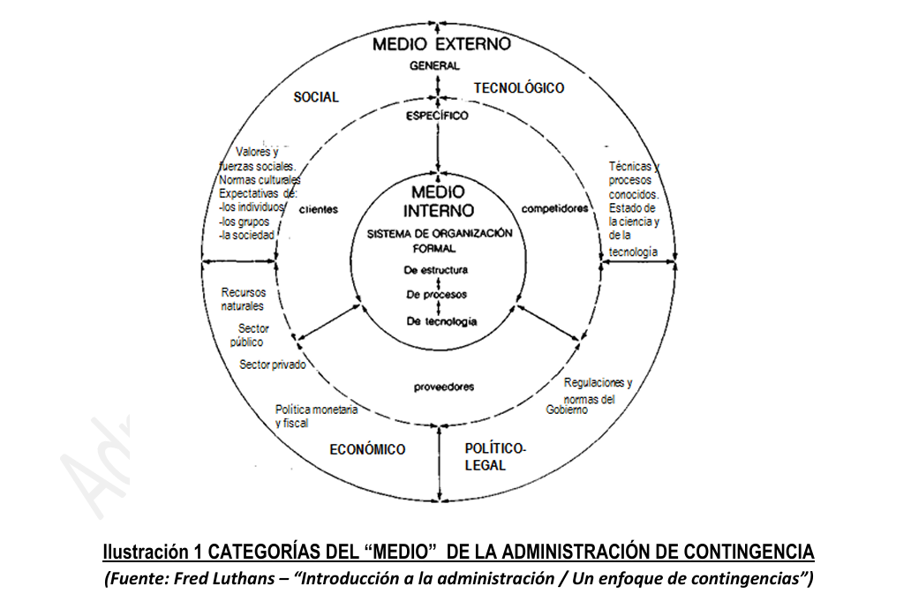
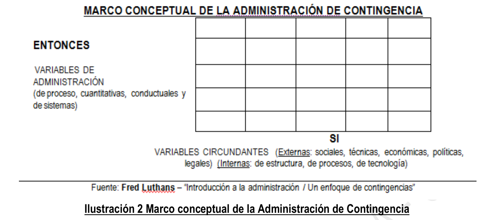
IIILA CULTURA DE LA ORGANIZACIÓN
Cada organización existe en un macroambiente formado por los sistemas cultural, político y económico, más la tecnología y el sistema social. Definición clásica de cultura: "el conjunto complejo que comprende conocimientos, creencias, arte, moral, ley, costumbres y cualesquiera otras capacidades y hábitos adquiridos por el hombre como miembro de la sociedad"; es un concepto antropológico, referido solo al Hombre. Cada organización crea su propia cultura, que es una subcultura respecto de la sociedad: patrones de conducta que se consideran "buenos" para sus fines y que pasan a ser el sistema de valores esperado. Robbins y Coulter: "la cultura organizacional es un sistema de significados compartidos entre sus miembros que distingue a una organización de las otras". Características comunes: se instala por imitación, interacción y aprendizaje; es dinámica y cambia a veces fuera del control de la Dirección; interactúa con el contexto; puede tener perfil propio o emular culturas exitosas. El estilo de la Alta Dirección es decisivo en la cultura, pero no el único factor.
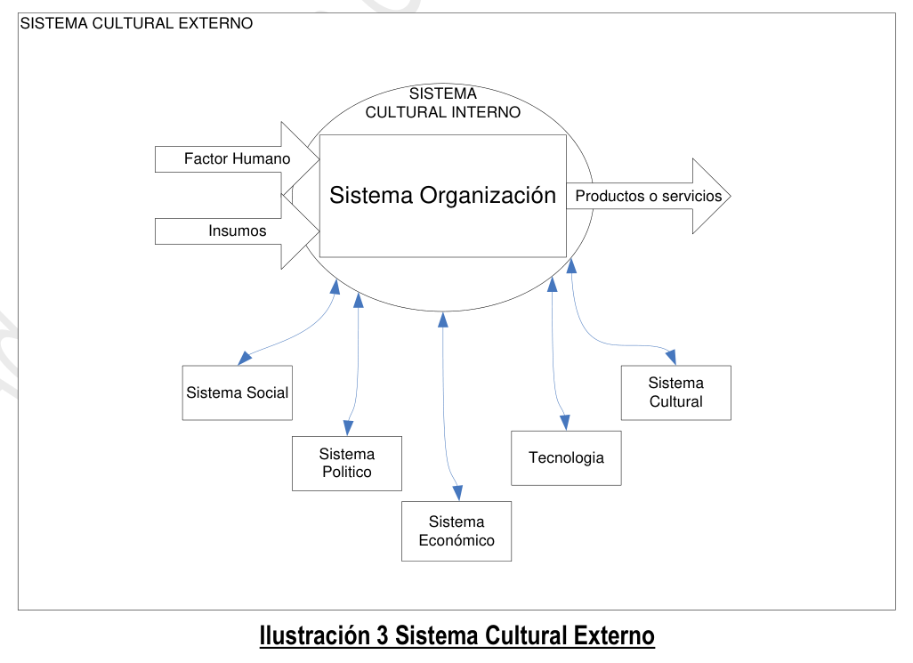
Grupos primarios: pequeños, espontáneos, voluntarios, durables, con base afectiva; el grupo es un fin en sí mismo y sus objetivos aparecen después de formarse; integran la organización informal. Grupos secundarios: resultan de la estructura formal, los objetivos y tareas asignados dan origen al grupo, son más grandes; dentro de ellos coexisten grupos primarios. Los grupos son vehículos de control social: imponen sus pautas coactiva o persuasivamente, y pueden dar cohesión o ser vehículos de disociación. La organización es un sistema social complejo, dinámico y abierto, que puede renovarse en una crisis sin perder su identidad.
La cultura se basa sobre todo en hipótesis fundamentales que los miembros consideran verdades primarias y que se transmiten a los recién llegados. Tres grados del sentimiento hacia la organización: Pertenencia, percepción unívoca de a qué organización se pertenece, sin implicar adhesión (ejemplos: el chico de la Puna que dice "cuando estuvimos en la Argentina"; el futbolista hincha de un club que juega en otro). Implicación o involucración, relación biunívoca donde el empleado comparte objetivos creíbles y útiles para ambos; según Porter es aceptación de objetivos y valores, voluntad de actuar hacia ellos y deseo de participar; requiere confianza y comunicación sin manipulación. Identificación, sentir la suerte de la organización como propia (el hincha dice "ganamos"); Chris Argyris la considera malsana en las empresas porque el individuo necesita una buena vida de "no-trabajo", y la Cátedra coincide: es insostenible a largo plazo.
La cultura empresarial se construye entre una cultura exterior (nacional o regional) y varias subculturas internas de los grupos de origen. Las subculturas comparten supuestos, valores, significados e imagen corporativa; no son programadas por la dirección, y la cultura de los dirigentes es una subcultura más aunque muy influyente. Cultura "fuerte": normas de la Dirección uniformes, conocidas y compartidas por todos. Cultura "débil": predominan las normas de subgrupos; los términos no son valorativos, a veces conviene la diversidad, y se aplica el enfoque de contingencias. Sistemas culturales formales: estructura organizacional (la burocracia hace obedecer a la autoridad, evadir culpas y fragmentar responsabilidad; Barcos propone la "Gerencia Múltiple" con principios unificadores que fijan límites), líderes (crean, mantienen o cambian la cultura), códigos y políticas (deben ser consistentes con la cultura), sistemas de recompensa (muestran qué valores se premian) y programas de orientación y entrenamiento. Sistemas informales: mística e historias (héroes y fundadores), ritos (inducción, festejos), tabúes (el tuteo), símbolos de estatus (tamaño del escritorio, estacionamiento) y jergas. Utilidad de estudiar la cultura: fomenta la comprensión, permite predecir el comportamiento, sustituye a la experiencia y facilita el cambio.
↑ Volver al listadoIVEL GERENTE GENERAL SEGÚN JEAN-PAUL SALLENAVE
El gerente general es responsable de definir la estrategia, determinar objetivos y medios, marcar pautas para obtener y usar recursos, organizar tareas, coordinar y controlar operaciones. Revisa la estrategia y las estructuras ante imprevistos externos (crisis energética) o internos (huelga). Su campo de acción es la triple dimensión Personas, Estructuras y Estrategias, más el medio externo (ilustración 4). Personas más estructura forman el medio interno, con comportamiento propio (comportamiento organizacional). La estrategia en sentido amplio es el conjunto de relaciones entre el medio interno y el externo; hay un paralelo estrategia/comportamiento (empresa/individuo); los límites del sistema deben ser permeables o tiende a desaparecer. El gerente debe ser Líder, Organizador y Estratega. Tres funciones de mando: preservar la empresa, controlar las reacciones cuando las previsiones no ocurren y concebir el futuro proponiendo objetivos.
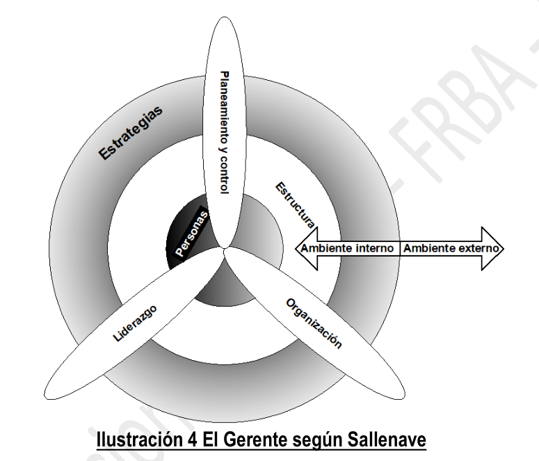
Gerente estratega: es un político, no un filósofo; requiere virtud (fijar objetivos realistas y alcanzarlos con los medios más económicos) y fortuna (la suerte que sonríe a los audaces). Dos tipos de estrategas: los que solo actúan presionados por las circunstancias (salir de los apuros) y los emprendedores, que buscan oportunidades y asumen riesgos sistemáticamente. También es un manipulador que construye un "castillo de poder" mediante el juego de favores, moneda de cambio del poder organizacional y mal necesario para la cooperación entre departamentos; el favor en detrimento de la empresa es prevaricato. Gerente organizador: la estructura es un dato en el presente y una variable en el futuro; debe ajustar estructura y estrategia para que sean congruentes; la estructura sigue a la estrategia. Cada estrategia de base (expansión, diversificación geográfica, integración vertical, diversificación de productos) induce una estructura distinta (ilustración 5); de aquí nace la Teoría Contingente: no hay estructura ideal. Gerente líder: no tiene éxito sin la cooperación de empleados, clientes, proveedores, accionistas y banqueros; como comunicador hace comprender la estrategia y como líder influye en el comportamiento. El liderazgo proviene de una doble sensibilidad: a las personas y a los objetivos de la organización, las cualidades peor distribuidas entre los gerentes. El Grid Gerencial cruza ambas sensibilidades y ubica al líder, al autócrata, al demócrata y al burócrata (ilustración 6). No hay líder ideal: el líder tiene los mismos genes que el autócrata, el burócrata y el demócrata, más el atributo de la adaptabilidad.
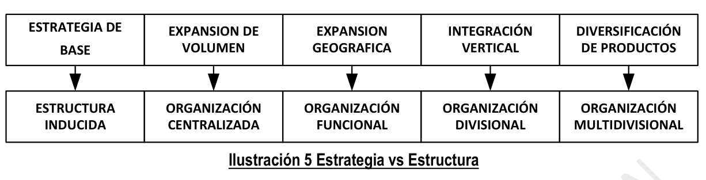
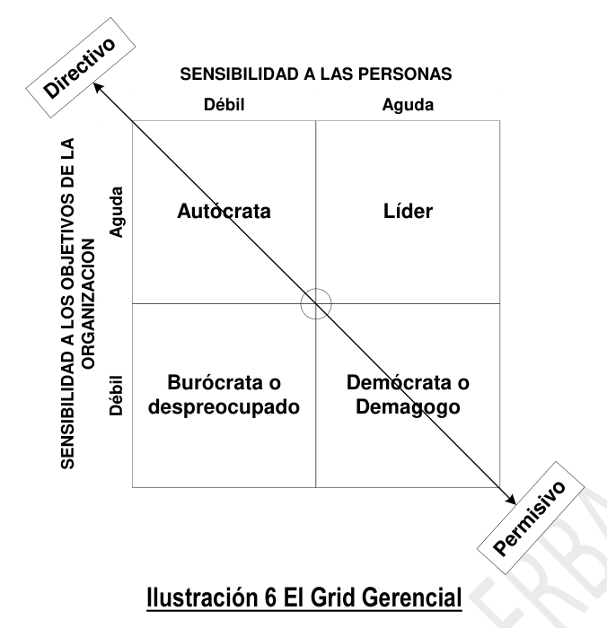
VCONCEPCIONES ACTUALES SOBRE LA GERENCIA Y SU EJERCICIO EFICAZ
Gerente es quien dirige toda una empresa, un área, un departamento o una división. Otra definición: "Gerencia es la práctica de decidir para otros sobre el empleo de todos los recursos, y de obtener que esos otros pongan en vigor esas decisiones". La escuela clásica planteaba el proceso gerencial en tres pasos: planificar, organizar y controlar, dando por supuestos los objetivos y la ejecución sin desvíos (visión mecanicista). Se redefinió el primer paso como establecer objetivos y se agregó una función para poner en acción a los dirigidos: dirección, supervisión o motivación. Funciones gerenciales: establecer objetivos, planificar, obtener recursos y organizar, motivar, controlar comparando resultados reales con esperados, e introducir modificaciones ante desvíos o cambios del ambiente. Se cumplen en todos los niveles, están interrelacionadas y constituyen un sistema. Drucker: "El gerente solo debe hacer aquello que no pueda delegar a otro".
Un rol son los patrones de conducta que se esperan de un individuo en una unidad social. La Cátedra distingue funciones (asignadas formalmente al puesto) de papeles o roles (dependen de las características personales). Sallenave: tres papeles, estratega (modifica las relaciones entre empresa y entorno, es esencialmente político), planeador-organizador (ajusta la estructura, entendida como todo el esquema organizacional, a la estrategia) y líder-comunicador (influye en colaboradores y hace comprender la estrategia a los públicos; Grid de Blake y Mouton). Mintzberg: diez papeles en tres esferas. Interpersonales: representante (cabeza simbólica y ceremonial), líder (coordina, dirige y motiva) y enlace (contactos fuera de la línea vertical, redes y coaliciones). Informacionales: monitor (busca información del ambiente), difusor o diseminador (distribuye información a los colaboradores) y portavoz o vocero (informa a terceros y superiores). Decisionales: emprendedor (inicia cambios y proyectos), árbitro (maneja conflictos y perturbaciones), administrador de recursos (asigna recursos y su propio tiempo, expresión de su verdadera política) y negociador. Los papeles son inseparables: sin enlaces no hay información, sin información no hay difusión ni decisiones; su relevancia varía por nivel (representante en niveles altos, enlace en medios y altos). Correspondencia: el estratega de Sallenave equivale a emprendedor, negociador, portavoz, enlace y representante; el planeador-organizador a administrador de recursos, monitor y árbitro; el líder-comunicador a representante, líder, difusor, portavoz y árbitro. Habilidades gerenciales: conceptuales (visión de la complejidad del todo), técnicas (conocimiento del campo de especialización) y humanas (interactuar, motivar, resolver problemas interpersonales). Su importancia relativa cambia según el nivel de la pirámide organizacional (ilustración 8). Drucker, "cuatro C" de la efectividad gerencial: Concentración, Conocimiento de las propias fortalezas, Capacidad para hacerse entender y Capacidad para ubicar correctamente a cada colaborador.
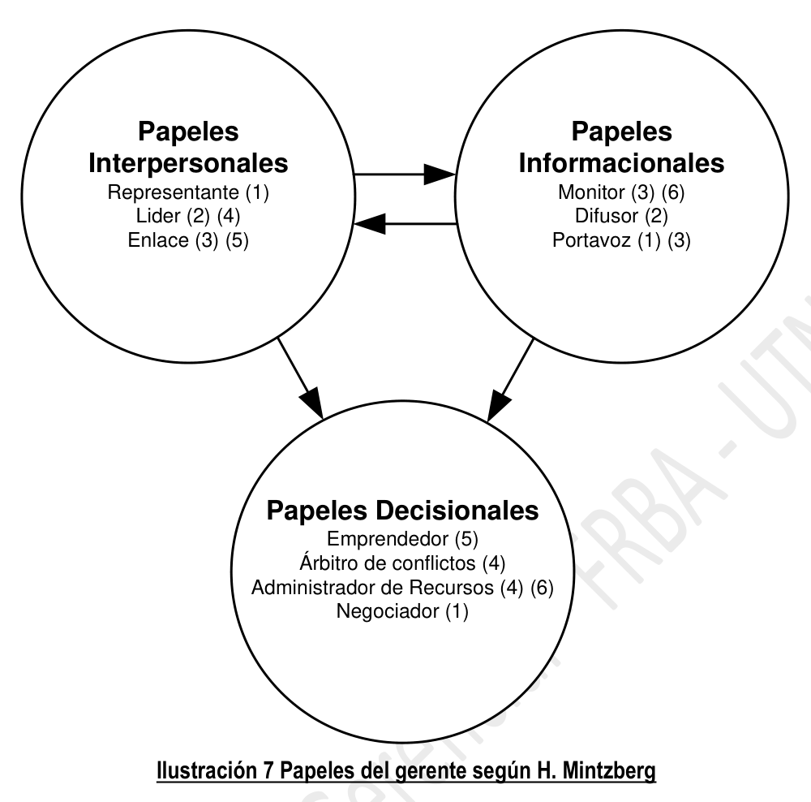
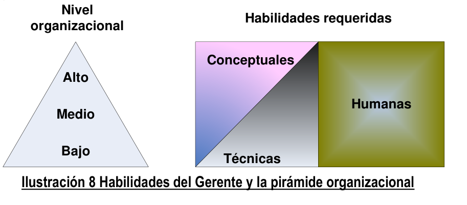
VIEL GERENTE, EMPRENDEDOR Y NEGOCIADOR
Para Drucker "el gerente general es un empresario": no solo resuelve problemas (actitud reactiva) sino que busca, identifica y explota oportunidades asumiendo riesgos (actitud proactiva). El gerente empresario es innovador, participa en las operaciones, acepta riesgos y errores como parte del negocio, y mira al mediano y largo plazo. El gerente burocrático tradicional actúa como "administrador-custodio": evita riesgos y errores, lo motivan recompensas materiales y simbólicas (promociones, oficinas, subalternos), fija metas cortas y delega lo operativo. El administrador pregunta "¿qué recursos controlo, con qué estructura cuento?"; el empresario pregunta "¿dónde está la oportunidad, cómo la aprovecho, qué recursos necesito y cómo los obtengo?". Robbins y Coulter definen el espíritu empresarial como buscar oportunidades mediante la innovación sin considerar los recursos disponibles en ese momento. Los emprendedores pecan de exceso de confianza y generalizan a partir de pocas observaciones, pero deciden rápido y contagian entusiasmo; los administradores esperan toda la información y la oportunidad puede pasar. Mintzberg, cuatro rasgos de las organizaciones empresariales: se centran en oportunidades, el poder está centralizado en un directivo audaz y poco planificador, la estrategia surge de "saltos" drásticos y el crecimiento es el objetivo principal. Comentarios de la Cátedra: el emprendimiento proactivo no es delegable (la implementación sí), y en decisiones estratégicas el planeamiento se expresa en lanzar nuevos objetivos, no en metas detalladas.
Kliksberg: la negociación es hoy "una forma de vida del gerente"; el modelo tradicional la reprimía con imposiciones verticales, a alto costo. Bolman y Deal: la negociación se impone siempre que dos o más partes tienen intereses en común y otros en conflicto (gerencia y trabajadores, gerencias entre sí por recursos). Robbins y Coulter distinguen negociación distributiva e integradora. Distributiva: suma cero, "yo gano, tú pierdes", cantidad fija para dividir, oposición mutua, corto plazo; ejemplo típico, las paritarias salariales. Integradora: ganar-ganar, cantidad variable, intereses convergentes, largo plazo; requiere franqueza en la información, sensibilidad al otro, confianza mutua y flexibilidad, condiciones que chocan con las culturas que quieren ganar a cualquier costo. Riqué, tres estilos: competitivo (el objeto es fijo, se usa todo el poder), cooperativo (el objeto no es fijo, se puede "ensanchar el pastel") e integrador (proyecto conjunto superador, útil entre departamentos de una misma empresa). Recomendaciones: informarse sobre intereses y metas del oponente, no verlo como enemigo, abrir en positivo con una concesión menor, escuchar y no apresurarse, separar personas de problemas, tratar la oferta inicial como punto de partida, buscar soluciones gana-gana y, en un callejón sin salida, recurrir a terceros: mediadores (ayudan sin imponer), árbitros (imponen una solución) o conciliadores (canal de comunicación). La dinámica política es inevitable en condiciones de ambigüedad, diversidad y escasez.
↑ Volver al listadoVIILIDERAZGO - CONCEPTOS BÁSICOS Y NUEVOS MODELOS
Kimball Young: "el liderazgo representa un dominio fundado en una personalidad poderosa, en la aceptación del grupo o en conocimientos pertinentes en una situación dada". Se diferencia de la jefatura, que es poder formal; el liderazgo es informal, situacional y restringido a un tiempo y lugar. Harris: una situación crea un imperativo en el grupo, alguien lo hace consciente y libera capacidades colectivas; el liderazgo es una función colectiva, y ni el líder más poderoso extrae del grupo lo que este no quiera ceder. Conviene promover a quienes demuestran eficiencia y aceptación del grupo, no a los trepadores en ambientes competitivos. Tipología elemental: líderes autócratas (concentran poder y responsabilidad) y demócratas (dan participación, orientan, delegan), con variantes como el paternalista que aparenta democracia pero decide todo.
Teoría de los Rasgos: asocia el liderazgo a inteligencia, carisma, decisión, entusiasmo, fortaleza, valor, integridad y confianza en sí mismo, pero la investigación no halló rasgos presentes en todos los líderes (Luther King, Juana de Arco, Mandela, Thatcher, Gandhi son muy distintos). Kirkpatrick y Locke, seis características: empuje, deseo de dirigir, honestidad e integridad, confianza en sí mismos, inteligencia y conocimiento relativo al trabajo. Los rasgos solo facilitan el liderazgo; ignoran la interacción con los colaboradores y la situación.
Teorías Conductuales (años '40 a '60): buscan qué hacen los líderes efectivos; si tuvieran éxito se podría entrenar líderes. Kurt Lewin (Universidad de Iowa) estudió tres estilos: autocrático (centraliza, dicta métodos, decide unilateralmente), democrático (involucra, delega, alienta participación, usa retroalimentación) y laissez-faire (libertad completa al grupo). Resultado: el laissez-faire fue inefectivo; autocrático y democrático produjeron igual cantidad, pero el democrático mayor calidad y satisfacción; estudios posteriores dieron resultados variados en desempeño y consistentes en satisfacción. Tannenbaum y Schmidt propusieron un continuo desde centrado en el jefe hasta centrado en los colaboradores, eligiendo según fuerzas del gerente, del colaborador y de la situación, con tendencia a largo plazo hacia estilos centrados en los colaboradores. Ohio State definió dos dimensiones: estructura (el líder define roles) y consideración (confianza y respeto mutuos). Michigan: orientación a los empleados u orientación a la producción, similar al Grid Gerencial de Blake y Mouton (preocupación por empleados y por producción, cinco estilos básicos).
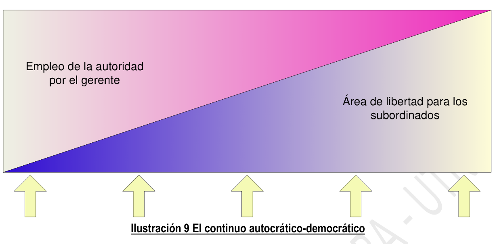
Teorías Contingentes: ni rasgos ni comportamientos predicen el éxito; la efectividad depende de adecuarse a la situación. Teoría Situacional de Hersey y Blanchard: el estilo depende de la capacidad y la disposición de los colaboradores (ilustración 10). Las cuatro acciones son DIRIGIR (estructurar, controlar y supervisar), INSTRUIR (orientar y ayudar), APOYAR (elogiar, escuchar, facilitar) y DELEGAR (traspasar las decisiones cotidianas). La Cátedra adhiere al enfoque de contingencias (variable independiente: desarrollo del colaborador; dependiente: comportamiento del superior), pero critica la curva en forma de Campana de Gauss, que sugiere que la mayoría está en nivel medio. Teoría de la Ruta-Meta de Robert House: el líder apoya a sus subalternos para alcanzar metas y esclarece el camino reduciendo obstáculos (relacionado con la "implicación"). Cuatro comportamientos: líder director (dice qué se espera y cómo), apoyador (amistoso, atiende necesidades), participativo (consulta antes de decidir) y orientado a logros (metas desafiantes). Las variables contingentes son los factores ambientales y los factores del colaborador (ilustración 11); el líder es flexible y su conducta es ineficaz si es redundante con el ambiente o incongruente con el colaborador.
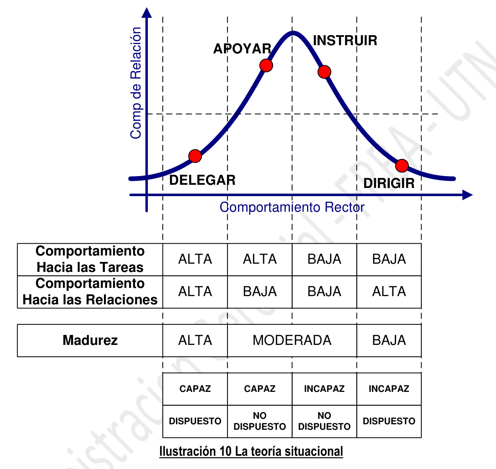
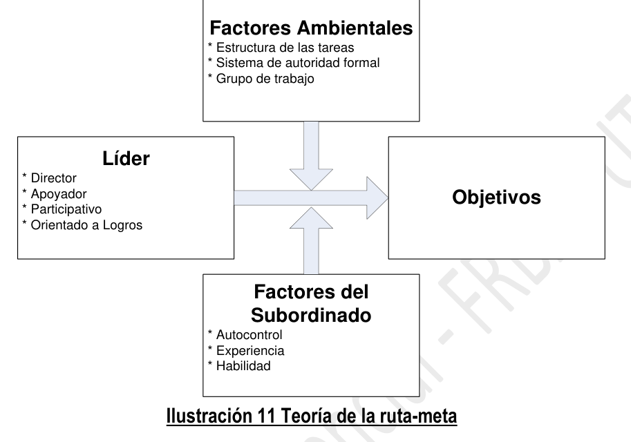
Enfoques emergentes. Liderazgo carismático: los colaboradores atribuyen capacidades heroicas; House identifica confianza extrema, carácter dominante y fuerte convicción; correlaciona con alto desempeño y satisfacción, sobre todo con tareas de adhesión ideológica (organizaciones "normativas" de Etzioni, política, religión, empresas en crisis), pero pasada la crisis puede ser una carga porque el líder no escucha. Liderazgo transaccional: guía y motiva hacia las metas aclarando roles y tareas (la mayoría de las teorías anteriores). Liderazgo transformacional: inspira a trascender el interés personal por la organización, atiende el desarrollo individual, cambia la percepción de los problemas y emociona (Wexner, Kelleher, Bill Gates); es más que carisma porque infunde la capacidad de cuestionar incluso los puntos de vista del líder. Se levanta por encima del transaccional, no se opone a él, y la evidencia es abrumadora: menor rotación, mayor productividad y satisfacción (oficiales militares, gerentes de Federal Express).
↑ Volver al listadoVIIIEL GERENTE, MOTIVADOR Y CONSTRUCTOR DE CONSENSO
"Motivar y recompensar a los empleados es una de las actividades más importantes y a la vez más desafiantes de un gerente"; lo que lo motiva a él puede no motivar a sus colaboradores, por lo que debe ajustar sus prácticas a las necesidades de ellos. Estímulo: hecho objetivo de la realidad, impulso exterior (necesidades materiales, pago, exigencias sociales). Motivo: impulso interior, reflejo de la conciencia; la motivación es un proceso dinámico de intención y acción hacia la satisfacción de necesidades. La motivación es un proceso reiterativo que va del equilibrio interno a la satisfacción (ilustración 12). El estímulo se convierte en motivo a través del tamiz de la personalidad, experiencias y concepción del mundo; es esencial saber a qué estímulos es sensible cada persona.
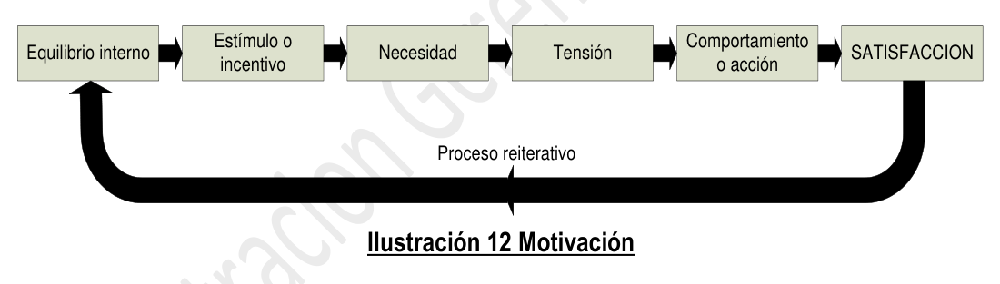
Maslow (1943) formuló la jerarquía de necesidades en cinco niveles, dos primarios y tres secundarios (ilustración 13). Principios: una necesidad satisfecha no motiva ("produce saciedad"); solo las insatisfechas dirigen el comportamiento; las secundarias surgen gradualmente cuando las inferiores están controladas; no todos llegan a la autorrealización ni a la estima. McGregor clasificó cuatro grupos: fisiológicas y de seguridad, sociales, egotistas (reputación y autoestima) y superiores (desarrollo integral). Herzberg (Texas Instruments) halló dos "zonas" de satisfacción: la provista por la tarea en sí misma (responsabilidad, prestigio, realización; motivación intrínseca) y la periférica (salario, beneficios, control, normas del grupo; mantenimiento), y dos tipos de trabajadores según cuál buscan. Teoría dual de Herzberg: factores higiénicos o de mantenimiento (subsistencia y seguridad), cuya ausencia produce insatisfacción pero cuya presencia solo la evita; factores de motivación (autoestima, prestigio, realización), cuya presencia produce satisfacción y cuya ausencia solo priva de motivación. Conclusión: mejorar salario o condiciones evita conflictos pero es de corto alcance; los motivadores propiamente dichos son inagotables.
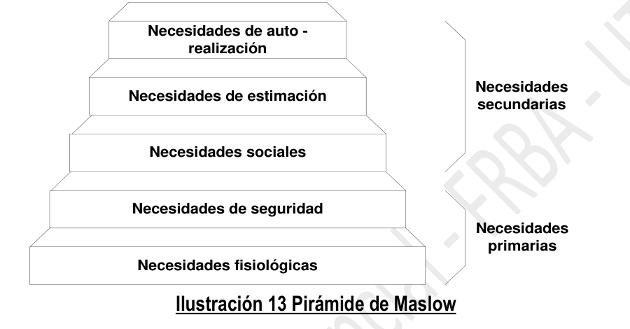
Las motivaciones son dinámicas: Reinholds, Maner y Schultz mostraron que con desocupación aumenta la satisfacción con cualquier trabajo y cambia la estructura motivacional. Robbins y Coulter señalan factores actuales: diversidad de la fuerza de trabajo (horarios flexibles, trabajo a distancia), pago por desempeño, participación accionaria y recompensas no monetarias, que la Cátedra no considera novedad. La monotonía o tedio aparece cuando el trabajo no permite crear y suele derivar de la extrema división del trabajo; causa errores, ausentismo y accidentes, y se neutraliza con rotación de puestos, enriquecimiento de la tarea y selección adecuada. Frustración: situación de hallar obstáculos (en el medio, en personas o en uno mismo) para objetivos que satisfacen necesidades. Conducta adaptada: resuelve o elude el obstáculo. Conducta inadaptada: agresión (violencia o represalias), regresión (estados infantiles), fijación (repite lo ineficaz), proyección (culpa a otros) y desinterés fingido. Herramientas gerenciales que motivan: comunicación bidireccional (responsabilidad central del superior), planeamiento participativo, supervisión general o "de desarrollo" (participación, rotación, enriquecimiento, control por resultados) y recompensas (fijas y variables, premios, ascensos, capacitación, carrera). La motivación es función del grupo desde Hawthorne; en crisis el grupo necesita ver que el gerente pilotea y no que "la crisis lo gerencia a él" (Pérez Roldán). Fainstein: salvo urgencias, construir consenso, que no es mayoría, conformismo ni acatamiento, sino resultado del diálogo, la escucha activa, el respeto al disenso creativo y la confianza de opinar sin temor.
↑ Volver al listadoIXEL GERENTE COMUNICADOR - IMPORTANCIA DECISIVA DE LA COMUNICACIÓN
Lewis Carroll: "Una de las cosas más difíciles del mundo es transmitir las ideas con exactitud de una mente a otra". El gerente no tiene éxito sin la cooperación de las personas, por lo que debe hacer comprender la estrategia: ser un comunicador. Herbert Simon: la comunicación es "un acto de transmisión de premisas decisorias"; Scott y Mitchell agregan ideas, sentimientos y valores entre individuos, grupos o máquinas. Es transferencia de significados: si el orador no es escuchado o el escritor no es leído, no comunica. Comunicación formal: sigue la cadena de mando y los roles (un jefe que solicita algo). Comunicación informal: surge para satisfacer necesidades no cubiertas por la formal, sin estructura predeterminada; crea canales más rápidos y eficientes y se basa en atracción y lealtad; la mayoría de las empresas la descuidan (ejemplo del bar después de hora). Mintzberg: al gerente "la información blanda es la que más agrada y la que más llega, especialmente chismes, rumores y especulaciones"; salir de la oficina demuestra dotes de líder al "bajar" para comunicar.
Formas de comunicación. Oral: rápida y con retroalimentación inmediata, pero con riesgo de distorsión al pasar por varias personas; la descendente pasa bien porque trata asuntos concretos, la ascendente llega deformada porque trata emociones y reclamos. Escrita: memorándums, cartas, publicaciones; obliga a pensar con cuidado pero es lenta y sin retroalimentación automática. No verbal: sirenas, semáforos, tamaño de la oficina, ropa, lenguaje corporal, entonación. Medios electrónicos: teléfono, correo electrónico, mensajería, redes sociales. Mintzberg: los gerentes emplean el 78% de su tiempo en comunicación verbal y consideran la correspondencia una carga; "el banco de datos estratégico de la compañía no está en las computadoras sino en la mente de sus gerentes" (ejemplo del cliente que juega al golf con el competidor). Fainstein: el gerente debe escuchar activamente (estar receptivo y convertir la intención en hechos) y poner a prueba su capacidad de escucha mediante retroalimentación: preguntar, pedir aclaraciones y verificar comprensión. Las relaciones de comunicación requieren confianza, tiempo y empatía (experimentar en uno mismo los sentimientos del otro). La comunicación es una concordancia emotiva; ante datos con carga emocional (una evaluación negativa) el gerente debe aceptar el disgusto y ubicarse en el marco de referencia del receptor. La mala comunicación produce falta de incentivos, objetivos confusos, pérdida de autoridad, inseguridad y frustración; hay que manejar el tiempo y que el mensaje sea claro. Saber expresarse y escuchar es la mayor fortaleza del gerente, que siempre atiende el mensaje integral de su interlocutor.
↑ Volver al listadoXPODER Y AUTORIDAD EN LAS ORGANIZACIONES
Influencia: proceso por el cual uno o más individuos inducen a otros a hacer algo distinto de lo que harían habitualmente. Elementos: el agente que influye (O), el método y el agente sometido (P); relaciones posibles: uno sobre uno, grupo sobre uno, grupo sobre grupo, uno sobre grupo. En la organización la influencia se expresa en poder y autoridad. Influencia y poder: para algunos el poder es una forma de influencia (capacidad de lograr que otros hagan lo que uno quiere); para otros "el poder es influencia latente y la influencia es poder en acción"; la Cátedra ve una relación circular: el poder es una categoría de la influencia que al ejercerse la vuelve real. Schermerhorn: hay formas de influencia que no implican poder porque no se usan deliberadamente; su tipología las ordena por orientación emocional y separa el campo del poder del campo de la autoridad (ver cuadro).
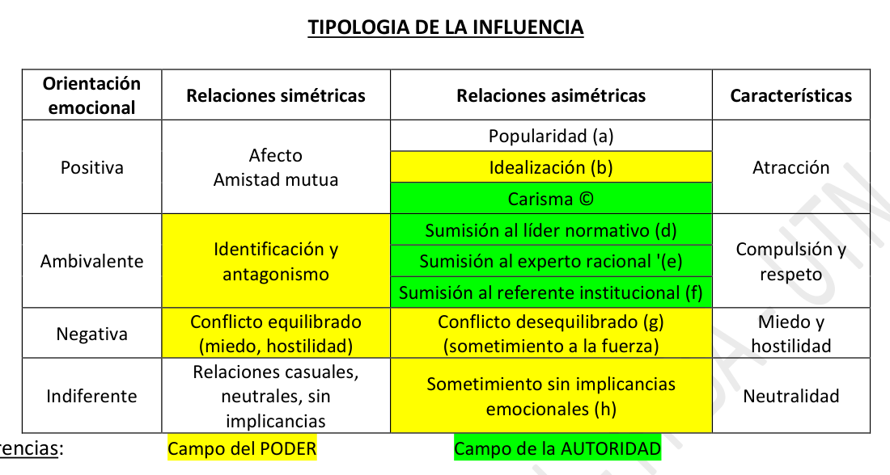
Poder y autoridad: para Weber la legitimidad es fundamental y se cumple en el fuero interno del colaborador, que acata voluntariamente. Etzioni: la autoridad es poder legitimado, aceptado y no meramente acatado. Barnard: "la decisión de si una orden tiene o no autoridad depende de la persona a quien se dirige, y no reside en quienes dan las órdenes". Legitimidad no es legalidad: de las tres bases de autoridad de Weber solo la racional-legal se basa en normas (sustenta la burocracia como forma "ideal"); la tradicional (derecho preestablecido a gobernar) y la carismática (magnetismo del líder) no dependen de la ley. Concepto clásico (Robbins y Coulter, Hampton): la autoridad es el derecho legítimo que viene con el puesto; el poder es la capacidad de influir en las decisiones; la autoridad es una parte del concepto más amplio de poder. Conclusiones: la aceptación es insoslayable para una verdadera autoridad; en toda jerarquía el acatamiento se basa en proporciones variables de aceptación y temor; los términos poder y autoridad se usan indistintamente según la fuente.
Fuentes del poder (French y Raven y otros): poder de recompensa (dar lo que satisface aspiraciones, incluidos "ingresos psíquicos"), poder coactivo o de coerción (castigo: tareas molestas, frenar promociones, hostilizar; su exceso produce abandono), poder legítimo (valores internalizados que dan derecho a influir; criterio formalista), poder de referencia (los colaboradores se identifican con el gerente y lo imitan) y poder del experto (conocimiento específico, frecuente en la organización informal). Formas de expresar el poder: descendente (superior sobre colaborador), ascendente (persistencia, presentación lógica, coaliciones, congraciamiento) y lateral (interdepartamental; esencial para el trabajo gerencial, que transcurre mayormente fuera de la unidad). Modelos de organización según el poder: racional burocrático (autoridad descendente, canales formales, poder ascendente ilegítimo y perturbador), colectivo de consenso (mínima autoridad formal, trabajo en equipo, poder ascendente legítimo y fomentado) y plural/político (negociación entre coaliciones, todas las formas de poder, el lateral es necesario). Relación poder real/jerarquía: en la organización burocrática el poder aumenta linealmente con la jerarquía; con poder en las bases disminuye; en la igualitaria es igual para todos. Pfeffer (Stanford), cómo se adquiere poder: tener algo que otros quieren, información que reduce incertidumbre, hacerse irreemplazable, influir en parte del proceso de decisión, lograr consenso y ocupar un lugar central en las redes de comunicación con comunicación persuasiva; la Cátedra no lo recomienda y nota la presencia de la organización informal. Algo más sobre autoridad: legal es lo prescrito por la ley (derecho positivo, estatutos); legítimo es lo "cierto, verdadero y genuino" para los valores de una sociedad. La verdadera autoridad necesita legitimación en el fuero interno de los colaboradores; hay que distinguir el poder del individuo (fluctúa con sus actitudes) del poder del puesto (fijado en normas, coercitivo y estable); hay personas sin autoridad formal con autoridad individual (experto, referente).
↑ Volver al listadoXIDELEGACIÓN Y PARTICIPACIÓN
Estructura centralizada: todo el poder de decisión descansa en una persona o un grupo muy reducido. Estructura descentralizada: el poder está disperso entre mucha gente. Mintzberg: alcanzado cierto tamaño hay que descentralizar porque una sola persona no puede entender ni manejar todas las decisiones a tiempo; además estimula la motivación. Descentralización vertical: delegación del poder formal que desciende por la cadena de autoridad, de la cumbre estratégica a la línea media. Descentralización horizontal: desplazamiento del poder fuera de la línea, hacia el staff de analistas y asesores, que pesan por sus sistemas de normalización y su conocimiento (poder del experto). Ventajas de descentralizar: libera a la Alta Dirección y obliga a delegar, estimula la aceptación de autoridad y responsabilidad, da libertad, fomenta controles amplios, permite comparar unidades, desarrolla gerentes, ayuda a adaptarse al cambio, agiliza comunicaciones y mejora el clima. Desventajas: dificulta políticas uniformes, complica la coordinación, pierde control, queda limitada por técnicas de control y planeación inadecuadas y por falta de gerentes calificados, incrementa costos por especialistas duplicados, distorsiona comunicaciones y prioriza metas secundarias.
Delegación: otorgar a quienes tienen asignadas tareas cierto grado de autoridad para tomar decisiones previamente acotadas, junto con la responsabilidad por su ejecución y resultados. Principio: "la responsabilidad no se delega", quien delega sigue respondiendo ante su superior. Kent y Zamora: no hay verdadera descentralización sin delegación efectiva. Diferencia clave: en la participación la autoridad se comparte; en la delegación los colaboradores toman las decisiones ellos mismos. La delegación adecuada no es abdicación: el tiempo del gerente es escaso, hay que aceptar errores de costo no excesivo y colocar controles de retroalimentación; sin controles, es abdicación. Factores de contingencia: tamaño de la organización (más grande, más delegación), importancia de la decisión (lo más importante se delega menos), complejidad de la tarea (lo complejo se delega a quien tiene el conocimiento), cultura organizacional (confianza) y cualidades de los colaboradores. Requisitos para delegar: tener predisposición (tolerar el error, dar confianza), determinar qué delegar (lo repetitivo, lo de detalle), elegir la persona adecuada, comunicar responsabilidades y estándares, conceder la autoridad necesaria, proveer ayuda e información, monitorear (entrevistas, reportes) y evaluar recompensando. Preguntas de autoexamen: ¿me quedo después de hora?, ¿mi sector depende mucho de mí?, ¿dedico mucho tiempo al detalle?; "no hay nadie apto" o "no tengo tiempo para capacitar" son excusas por inseguridad y temor a perder poder. La delegación impulsa la autoridad hacia abajo, enriquece los puestos y los gerentes pasan de controlar a capacitar.
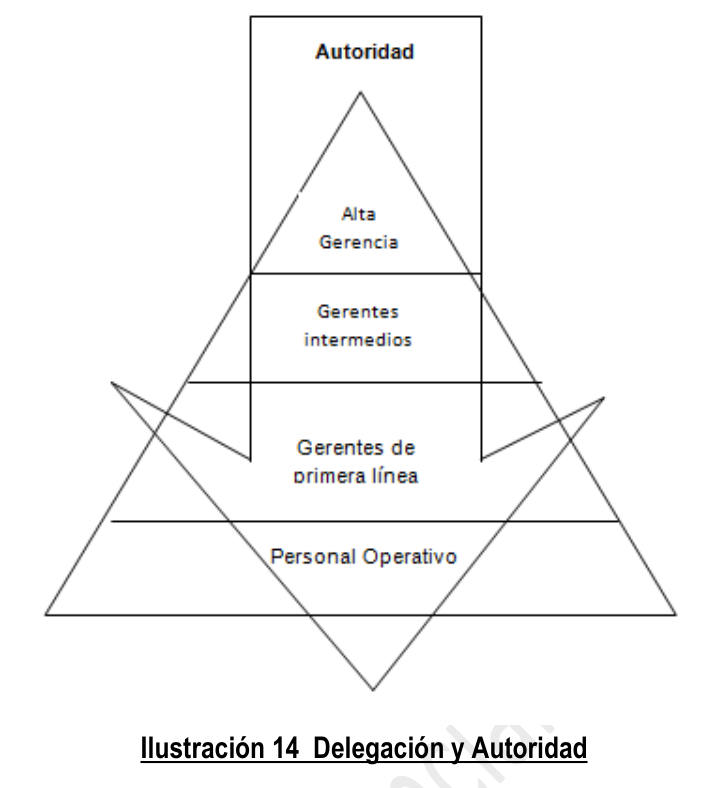
Administración participativa: se inspira en el principio de subsidiariedad, que los niveles superiores dejen a los inferiores las atribuciones que estos pueden ejercer mejor; promueve "un sentido de asociación y responsabilidad" (Golembiewski) y es el camino hacia la democracia en la administración. Herzberg: "cuanto más alto el nivel de ocupación, más alto el espíritu de trabajo"; Porter: la satisfacción (estima, autonomía) aumenta al ascender de nivel, mientras la de seguridad y social es igual en todos. La única medida válida de la descentralización es el grado en que la decisión se delega; sus resultados son organizaciones más planas, supervisión más general y alcances de control más amplios. La descentralización no es un compromiso entre centralización y caos, sino una tercera variante que combina flexibilidad con disciplina y reconcilia autodeterminación y control. Kline y Martin, la prueba real de la libertad: "¿el superior apoyará al colaborador que quiere ejecutar la tarea de un modo distinto del que él habría empleado?". Resumen: Delegación = descentralización operativa del poder, el jefe cede decisiones concretas, el colaborador actúa autónomamente, la responsabilidad final sigue en el superior, proceso formal. Participación = inclusión en el proceso decisorio, el poder no se cede sino que se discute, decisiones conjuntas o con consulta, enfoque democrático y motivacional.
↑ Volver al listadoXIIÉTICA, MORAL Y RESPONSABILIDAD SOCIAL EMPRESARIA EN LAS ORGANIZACIONES
Moral viene del latín mores, costumbre: es el catálogo de costumbres que una sociedad considera apropiadas y convierte en normas de conducta. Indica lo bueno y lo malo, se refiere al "deber ser"; sus proposiciones son imperativas, incondicionadas, a priori, y no pueden modificarse unilateralmente. El criterio de juicio es externo al actor (una autoridad reconocida: grupo, organización, sociedad, divinidad); el actor no puede crear las reglas con que se lo juzga. Orígenes de las normas morales: usos y costumbres, tradición y ley. Lo moral excede lo legal: hay actos legales moralmente cuestionados, y no todo acto inmoral es ilegal. La moral de la organización es parte de su cultura y la refleja; los valores y creencias determinan qué es "bueno" o "aceptable" internamente; a veces se consagra en reglamentos y otras es costumbre aceptada. La cultura de la alta gerencia es decisiva pero no única; Morgan: los directivos pueden influir en la cultura siendo conscientes del valor simbólico de sus actos, pero nunca controlarla totalmente. Las creencias que exageran la racionalidad y la eficiencia económica generan códigos morales no escritos que no respetan a las personas aunque proclamen lo contrario.
Ética viene del griego ethos, la "morada interior" de la persona donde practica su examen de conciencia. Definición: "La ética es una REFLEXIÓN que realiza el INDIVIDUO acerca de los VALORES que él cree que deben ser respetados y llevados a la práctica". Características: tiene su eje en el individuo; es una reflexión; se refiere a valores de la moral imperante; consiste en adherir consciente y meditadamente a unos valores y rechazar otros. No hay actuar ético al dejarse guiar por órdenes, caprichos o costumbres, porque son comportamientos irreflexivos. La finalidad de la reflexión es el obrar: la ética se juega al relacionarse con otros y en las consecuencias de mis actos; lo ético es un imperativo pero no una coacción, supone voluntad de hacer el bien en libertad. Edgar Morin propone educar en la comprensión humana (ética de la comprensión). Kliksberg: hay una "sed de ética" en América Latina; las visiones económicas que separan ética y economía produjeron un "vacío ético" y facilitaron la corrupción; Juan Pablo II cuestionó esa dicotomía. Ejemplo de Noruega: economía potente, alto desarrollo social y sin corrupción gracias a cultivar valores éticos en la educación y con el ejemplo de los líderes. Las universidades deben preparar a fondo a los profesionales (contadores, economistas, médicos) en sus responsabilidades éticas. El corrupto daña por lo que roba y por el mensaje que transmite: "todo para mí, no me importan los demás".
Ética en la toma de decisiones: hay dos fines en la dirección, el beneficio como fin en sí mismo (lleva a la deshumanización) y el beneficio con un fin social. Una decisión no es buena solo porque contribuye a los objetivos económicos; hay que preguntar si cumple los fines sociales, lo que remite a la misión. Si solo se busca el resultado económico, los mecanismos destruyen a los individuos y a la organización; se necesita convicción sincera del reclamo ético, no solo predisposición. La tentación es mayor en las empresas de lucro, que valoran solo la eficiencia económica; la dificultad es que hay que sacrificar parcialmente beneficios a corto plazo para consolidar la empresa. Sin convicciones morales las técnicas son instrumentos de la astucia; se necesita un liderazgo connotado éticamente que eduque a los subordinados. Síntesis: a mayores comportamientos éticos, mejores utilidades humanas y, a la corta o a la larga, mayores utilidades materiales; a mayor corrupción, déficit de dignidad y destrucción de los valores que permiten utilidades sustentables.
Responsabilidad Social Empresaria (RSE): surge de hechos de resonancia mundial sobre transparencia empresaria. Stakeholders (participantes interesados): gobiernos, accionistas, clientes, proveedores, empleados y sus familias, vecinos de las instalaciones y ciudadanos en general. Definición: contribución activa y voluntaria de las empresas al mejoramiento social, económico y ambiental con el objetivo de mejorar su situación competitiva y su valor añadido. Compromiso con el desarrollo sostenible trabajando con empleados, familias, comunidad y sociedad; va más allá de cumplir la ley, cuyo cumplimiento es el punto de partida (legislación laboral y ambiental) y no es RSE. Busca un nuevo equilibrio entre las dimensiones económica, social y ambiental y la excelencia atendiendo a las personas y sus condiciones de trabajo. Para la OIT es el conjunto de acciones que hacen que las actividades tengan repercusiones positivas sobre la sociedad; es una iniciativa voluntaria. Kliksberg: no es una moda, responde a demandas sociales; el nivel ético es clave para la competitividad (atrae personal capaz, genera compromiso, mejora retornos y hasta la salud del empresario); universidades como Harvard crean cátedras de ética en los negocios. En Europa la sociedad civil exige respeto a las leyes laborales, no discriminación, eliminación del trabajo infantil y cuidado ambiental; en EE. UU. un tercio de la población es consumidor responsable y crecen los fondos de inversión socialmente responsables. Ejemplos mundiales: ley de la etiqueta social en Bélgica, 240 etiquetas ambientales y de comercio justo en Europa, informe social obligatorio en Francia, criterios éticos de los fondos de pensiones en Inglaterra, guías para pymes en Italia, 95% de las pymes noruegas con acción social, Libro Verde de la Unión Europea, primer ministerio de RSE en Gran Bretaña. América Latina y Argentina están claramente retrasadas y deben avanzar para mejorar integración social, equidad y competitividad.
↑ Volver al listadoXIIIDOBLE MORAL, ACOSO Y DESMORALIZACIÓN EN EL TRABAJO
Los directivos deben unir dos perspectivas al decidir: la técnica (objetivos económicos) y la ética (efectos sobre los stakeholders). La empresa debe generar valor económico, pero también dar a sus miembros satisfacción, perfeccionamiento, continuidad y progreso, sin ignorar los derechos de consumidores, proveedores ni del personal. La legitimación social es necesaria para el éxito comercial: la confianza es un valor empresarial y la falta de credibilidad no es carta de triunfo. Cumplir las normas morales reduce conflictos, aumenta la cooperación interna y mejora la imagen externa. Inmoral: quien en su obrar transgrede el marco de la moral. Amoral: quien desconoce ese marco y define la moral desde su propia interpretación, tergiversando el carácter heterónomo de la moral (asumiéndola como autónoma) para autojustificarse. Etkin: una dificultad es la "imposición de una ética autoritaria por la organización", que coarta el discernimiento; se manifiesta en normas contrarias a los valores sociales o, más comúnmente, en la transgresión de las normas que la propia Dirección dice sostener.
Doble Moral: la "organización dual" está impregnada de la oposición o contradicción entre el discurso y la acción, produciendo injusticia y marginación; hay dualidades creadas y otras admitidas por indiferencia. Se traduce en sistemas perversos con lógica destructiva, hipocresía, complicidad e impunidad, incapaces de corregirse solos; sus actores no admiten nada desviado en sus actos. El "vector de la perversidad" muestra las rupturas entre pensar-decir (hipocresía y mentira), decir-hacer (falso discurso), pensar-hacer (actos irracionales) y el decir cambiante (doble discurso). La desviación es intencional y consciente; los hechos perversos forman círculos viciosos donde los efectos realimentan las causas. La calificación de inmoral o perverso viene de afuera porque la moral es heterónoma; es inaceptable alegar que cada situación es relativa. Términos: hipocresía (ocultar lo que se piensa), mentira (decir con intención de engañar), doble discurso (decir de maneras contradictorias), promesas incumplidas. Tipología de desviaciones perversas: a) desvío de las misiones de la institución; b) excesos en el uso del poder (impunidad del transgresor); c) influencia del aparato burocrático (la norma sobre el servicio); d) hipocresía y engaño deliberado; e) inhibición y fijación cultural, el "cierre de la organización" dogmática e impermeable al cambio. Ejemplos: trabajos insalubres aceptados por desocupación, prejuicios raciales o de género en decisiones, políticas de Recursos Humanos basadas en el miedo, "profecías autocumplidas", directivos que hablan de misión social y contaminan, centros de salud que predican excelencia y solo operan a quien paga.
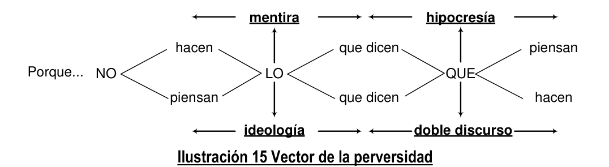
Acoso psicológico laboral (mobbing, del inglés to mob): violencia psicológica extrema, sistemática (al menos una vez por semana) y prolongada (más de seis meses) sobre una persona en el lugar de trabajo; también llamado acoso moral, psicoterror laboral u hostigamiento psicológico; alcanza niveles de epidemia y las víctimas favoritas son las mujeres. Stelzer: la burocracia administrativa desmoraliza al "ejecutivo eficiente" transformando un conflicto administrativo-ideológico en uno personal, apelando a la vergüenza y la culpa para "criminalizarlo" con acusaciones exageradas o inventadas; la víctima no lo comunica y no hay aprendizaje colectivo. Rasgos del acoso: sutileza (no agresividad manifiesta), continuidad en el tiempo (desgaste lento), conductas iniciales para calumniar, ofender, ridiculizar y aislar, y el silencio o complicidad de los compañeros (por miedo, envidia o resentimiento). El objetivo final es la autoexclusión: que la víctima abandone el puesto arrinconada y desmoralizada. Víctimas típicas (estudio del Instituto de Salud Laboral de Navarra): personas de elevada ética, honradas, rectas, autónomas, con iniciativa, alta capacitación y populares. Acosador: alteración del sentido de la norma moral, sin culpabilidad, agresivo, cobarde, mentiroso, compulsivo, improvisador, mediocre profesionalmente y con complejo de inferioridad. El acoso es siempre un abuso de autoridad: el acosador busca mantener su poder ante quien percibe como amenaza. Formas: medidas organizacionales (restringir el habla, tareas contra la conciencia, juzgar ofensivamente, no asignar tareas o asignar tareas degradantes, datos erróneos), ataques a la pertenencia social (aislar, ignorar, no dirigir la palabra), ataques a la vida privada (hacer parecer estúpido, mofarse de discapacidades, rumores), discriminaciones (género, orientación sexual, ideas políticas, religión, nacionalidad, raza) y agresiones verbales o físicas (desprestigio, requerimientos sexuales, gritos, amenazas). Consecuencias: estrés, ansiedad, depresión y dolencias físicas (dermatológicas, cardíacas, gastrointestinales, alérgicas). Leymann: "el lugar de trabajo es el único campo de batalla que queda donde las personas se pueden matar unas a otras sin correr el riesgo de ser enjuiciadas"; en Suecia el 10 a 15% de los suicidios se debe al acoso; según la OIT (2000) el 9% de los trabajadores europeos lo sufre (13 millones); en España el 5%, y el Barómetro Cisneros II indica 12%; en Argentina no hay estadísticas y el desempleo lo potencia. Prevención: identificar y evaluar los riesgos psicosociales al mismo nivel que los de seguridad e higiene; el acoso perjudica también a la empresa (ausentismo, baja productividad, mal clima, indemnizaciones). La gestión preventiva mejora la calidad de vida laboral, defiende la dignidad, basa las relaciones en respeto y tolerancia, abre cauces para quejas con investigación justa, y requiere acción coordinada pública y privada; su éxito depende de la cultura y del uso del poder en los niveles altos, atendiendo también al "mobbing horizontal" entre pares.
↑ Volver al listadoXIVESTRATEGIA Y PLANEAMIENTO
Estrategia: vocablo militar ("arte de coordinar acciones para conducir una guerra") adoptado por la gestión a comienzos del siglo XX como "conjunto de decisiones importantes que regulan el comportamiento de una organización". Sallenave: "estrategia de empresa es el conjunto de relaciones entre el medio ambiente interno y el medio externo de la empresa". La planificación estratégica es el proceso por el cual los dirigentes ordenan sus objetivos y acciones en el tiempo; una estrategia empresarial es un plan de asignación de recursos que tiende a modificar el equilibrio competitivo a favor de la organización. Paradoja de Sallenave: la estructura sigue a la estrategia, pero la estrategia de mañana surge de la estructura de hoy; la estructura es causa y efecto, freno y motor de la estrategia. Se necesita una estructura flexible para el cambio y estable para asegurar información, decisión, implementación y control; la cultura (identidad de la organización) impregna todo el esquema organizacional y, a través de él, la estrategia y el desempeño (ilustración 16). Tres clases de cambio: compulsivo (cambiar por creer que cambio es progreso, sin modelo ni objetivos), imitativo (copiar a los competidores sin objetivos, sin saber que responden a otra estrategia) y creador (con objetivo y modelo; la esencia de la estrategia).
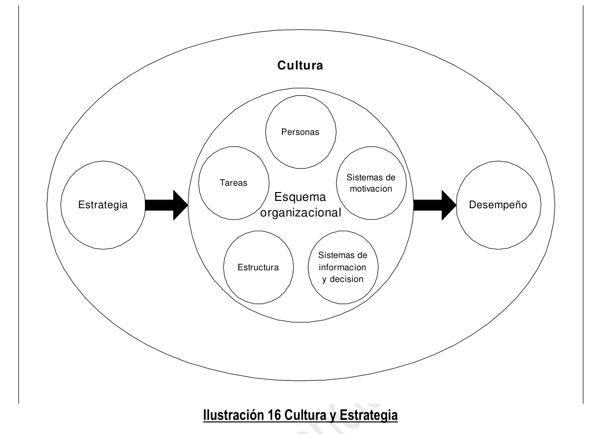
Planeamiento (Perel): tomar decisiones que determinan el curso futuro de la organización, examinando cursos alternativos y eligiendo anticipadamente los más adecuados para objetivos ya fijados; es un sistema de decisiones anticipadas que abarca toda la organización. Los objetivos se definen por atributo (verbo), unidad de medida, cantidad y horizonte (plazo). Objetivos estratégicos: a largo plazo, holísticos, no programables y muy agregados; ejemplo, "alcanzar en dos años el 25% de participación en el mercado". Dinardo: el planeamiento estratégico es un plan a largo plazo con decisiones duraderas y de difícil reversibilidad, que afecta todas las áreas, no programable, desarrollado en varios escenarios, modular, asociado al entorno y orientado a ventajas competitivas. "El gerente que no planea no está comprometido con la organización." Tres niveles según el horizonte: Operativo o programación (corto plazo, pocas funciones, programas y su secuencia); Táctico o de gestión (mediano plazo, un año, cierta reversibilidad, presupuestos y cronogramas, se expresa en metas cuantificables); Estratégico o estructural (largo plazo, duradero y de difícil reversibilidad, integral, jerárquico, no programable, no previsible, múltiple, modular, asociado al entorno, apoyado en el conocimiento interno y orientado a ventajas competitivas). Robbins y Coulter: la Administración Estratégica no termina en la formulación sino que incluye ejecución, control y evaluación de resultados.
Análisis del ambiente externo. Definiciones: necesidad (sentimiento de privación), deseo (forma cultural de la necesidad, que se vuelve demanda con poder adquisitivo) y producto (lo que se ofrece para satisfacer); la gente no compra productos sino satisfactores y "atributos percibidos"; los productos tienen ciclo de vida: lanzamiento, crecimiento, madurez y declinación. Modelo de las 5 Fuerzas de Porter para analizar una industria (empresas con productos sustitutos cercanos, de alta elasticidad cruzada): 1) amenaza de nuevos ingresos, frenada por barreras de entrada (marcas fuertes, inversión inicial alta, escala); la empresa dominante quiere barreras de entrada altas y de salida bajas; 2) amenaza de sustitutos, que ponen techo a la rentabilidad; 3) poder de negociación de los proveedores (concentración, especificidad de insumos; hoy se tiende a tratarlos como asociados, "just in time"); 4) poder de negociación de los compradores (palanca negociadora y sensibilidad al precio); 5) intensidad de la rivalidad, resultante de las demás, según crecimiento de la industria, costos fijos, diferenciación de productos, concentración de competidores, identidad de marca y barreras de salida. Contextos nacional e internacional: variables económicas, políticas, legales y sociales (globalización, PBI, tasas, elecciones, MERCOSUR, exclusión social).
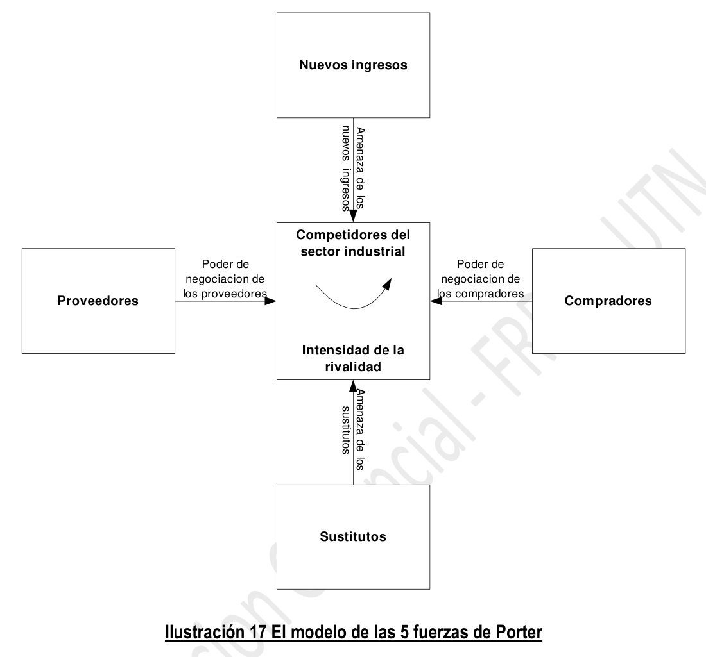
Análisis del ambiente interno. Cadena de Valor de Porter (1985): examina sistemáticamente todas las actividades de la firma, distinguiendo actividades primarias y de apoyo (ilustración 18). El "margen" (lo que paga el cliente menos los costos) depende de cómo se administre toda la cadena; ser el mejor en marketing no sirve si no se equipara con operaciones. La cultura de la organización (fuerte o débil, interna y externa) condiciona comportamientos y decisiones (IBM con trajes oscuros, Apple con jeans). Recursos: económicos (patrimonio, ratios, endeudamiento), financieros (acceso a crédito y capitales), activos (instalaciones, patentes, I+D), humanos (formación, fidelidad) y comerciales (canales, publicidad, precios). Matriz BCG (Boston Consulting Group, de portafolio o competitiva), ilustración 19: Estrellas, requieren inversión y luego se vuelven vacas lecheras. Vacas lecheras, generan utilidades con mínima inversión. Dilemas, requieren más efectivo del que generan y pueden ser estrellas o perros. Pesos muertos o perros, no invertir.
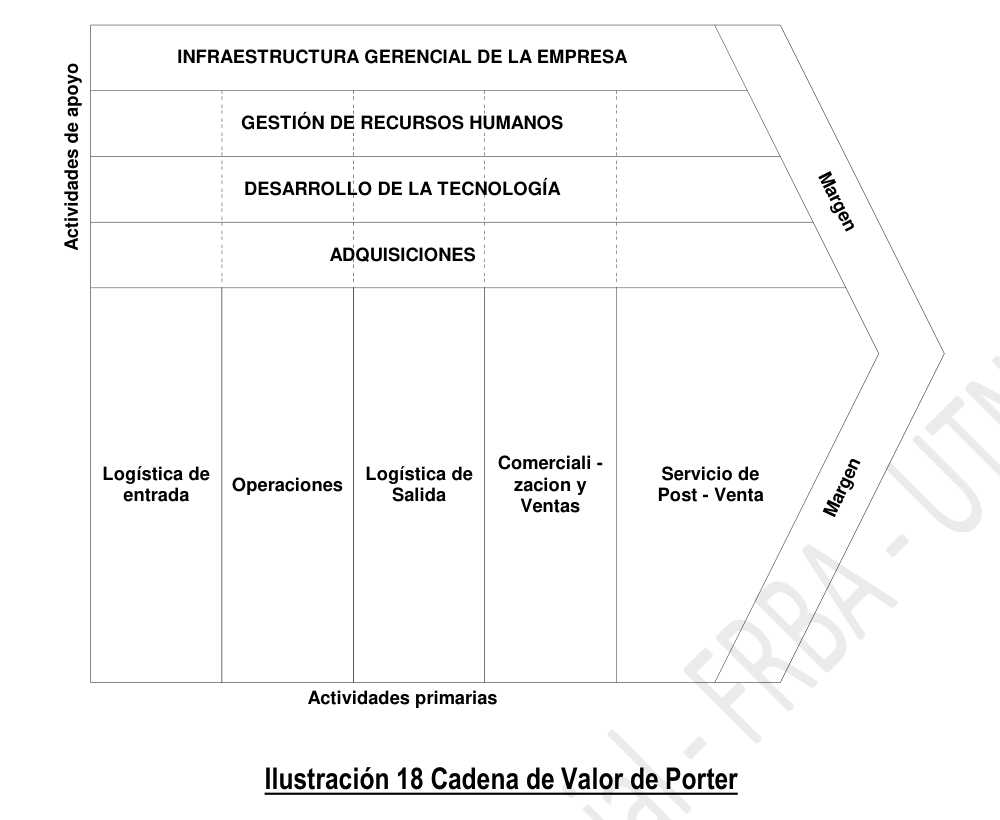
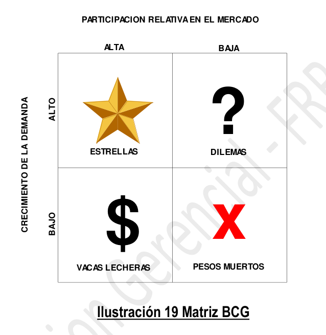
Análisis FODA: matriz de diagnóstico (ilustración 19) que cruza los factores internos, controlables, con los externos, no controlables pero vigilables. Uso: desarrollar fortalezas, atenuar debilidades, aprovechar oportunidades y prevenir amenazas; si predominan fortalezas y oportunidades el negocio está bien. La crisis es a la vez oportunidad y amenaza. Alberto Levy propone trece variables internas (gente, productivos, financieros, infraestructura, marca, mística, crédito, tiempo, información, tecnología, estabilidad, organicidad, maniobra) y trece externas (impacto externo, envergadura y crecimiento, rivalidad, sustitutos, barreras de entrada y salida, poder de proveedores, clientes y canal, compatibilidad cultural y tecnológica, tamaño de la apuesta, sinergia), cada una con una iniciativa para consolidar o superar. Técnica de Escenarios: en tiempos turbulentos las opciones son "apostar fuerte", "protegerse" o "esperar y ver"; un escenario es un cuadro coherente de lo que puede ocurrir, para planificar de manera contingente ("si ocurre tal cosa, actuamos de tal manera"), no para adivinar. Cuatro tipos de incertidumbre: futuro simplemente claro, futuros alternativos (probabilidades, como una ley por votarse), abanico de futuros (sectores emergentes, nuevos países) y auténtica ambigüedad (Rusia poscomunista, transitoria). Pasos: 1) identificar la decisión, 2) buscar factores clave, 3) fuerzas directrices (tendencias), 4) ranking de importancia e incertidumbre (no descuidar lo poco probable pero grave, como un tsunami), 5) matriz de implicancias, 6) dar cuerpo al escenario con indicadores.
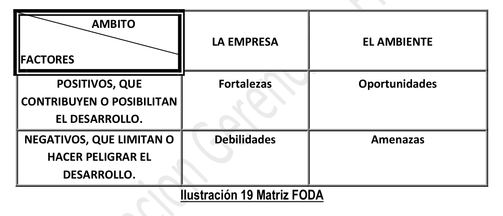
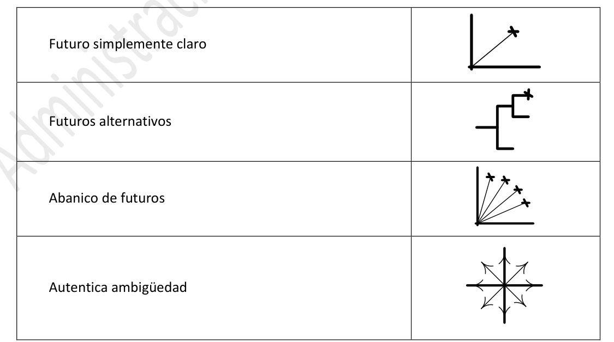
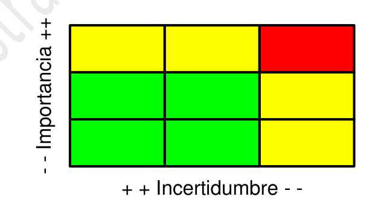
Formulación de estrategias: los análisis son solo una base; la decisión es política, libre y no programada. Ventaja competitiva: características que dan superioridad sobre los competidores y que debe ser sostenible en el tiempo; externa (cualidad distintiva valiosa para el comprador, estrategias de diferenciación) o interna (dominio de costos, liderazgo en costos). Estrategias de supervivencia (Sallenave): acción de refuerzo (atenuar debilidades: mejorar productos, tecnología, canales, capital; "más eficaz cuanto más específica es la crisis"), acción de redespliegue (ante crisis estructural, salir hacia nuevos sectores mediante diferenciación, segmentación, especialización o diversificación; el marketing es la función clave) y acción política (peticiones y presiones para ganar tiempo); la recuperación se apoya en los tres pilares. Estrategias de crecimiento: penetración del mercado (más ventas con los mismos productos y mercados: promociones, "13x12", publicidad), desarrollo del mercado (nuevas finalidades para productos actuales, segmentación: dentífricos para niños), desarrollo del producto (nuevos productos con mejores características para las mismas finalidades: naftas de mayor octanaje) y diversificación (nuevos productos para nuevos mercados, la más riesgosa; ejemplo Bunge y Born). Polémica: el planeamiento estratégico surgió con Igor Ansoff ("Estrategias Corporativas", 1965); Mintzberg (1994) es su principal detractor. Críticas de Mintzberg: los directivos se absorben en emergencias, la formalidad quita flexibilidad y creatividad, la alta dirección no revisa los planes con los mandos medios, la planeación es análisis racional descompuesto en pasos y se usa para controlar, produce resistencia al cambio verdadero (cambio transaccional en vez de creativo, estrategias extrapoladas del pasado) y separa formulación de implementación, pensar de hacer. La gran falacia: el análisis no es síntesis, la planeación nunca fue elaboración de estrategias y debería llamarse "programación estratégica". Defensores: Bertagnini (San Andrés) admite las modas pero pide separar la supervivencia de la reflexión estratégica y equilibrar flexibilidad con disciplina; Roces (ITBA) culpa a la prioridad de la rentabilidad de corto plazo ("se confundió estrategia con cuadro de resultados") y afirma que incertidumbre y pensamiento estratégico no son antagónicos.
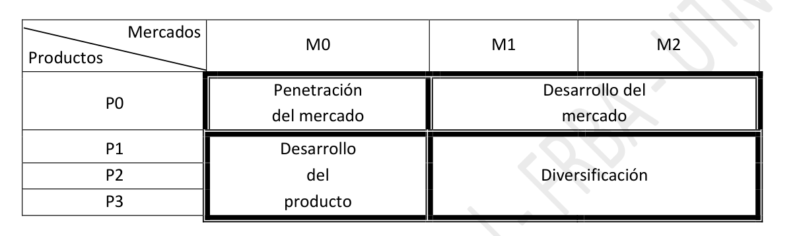
XVINFORMÁTICA GERENCIAL - EL TABLERO DE CONTROL
A los ejecutivos se les paga para generar riqueza y las empresas se gestionan como negocios en marcha; para ello necesitan información que permita juicios precisos. Las computadoras cambiaron el concepto de qué es una empresa y qué es dirigirla; el gerente necesita un sistema de información integrado con su estrategia. La información inexacta, incompleta, excesiva o tardía perjudica gravemente el rendimiento; hay que tener la información apropiada, en el momento oportuno y en la cantidad precisa. Sistema de Información Gerencial (SIG o MIS): sistema que proporciona a la gerencia la información que necesita a intervalos regulares; "sistema" significa orden, arreglo y propósito. Los datos son hechos escuetos sin analizar (números, nombres, cantidades) y son inútiles; procesados y analizados se convierten en información. Los indicadores de rendimiento no son solo financieros: calidad, satisfacción del cliente, innovación y cuota de mercado reflejan mejor las perspectivas. Dos actividades esenciales: desarrollar una arquitectura de información e instalar la tecnología que la soporte.
Arquitectura de información, tres aspectos. A) Categorías de información: identificar qué necesita la dirección para ejecutar la estrategia, en todas las funciones y niveles; muchas empresas hablan de servicio, innovación y calidad pero no las miden, y el tiempo es la variable estratégica menos desarrollada. La información que necesita cada nivel es distinta (ilustración 20). Hace falta un léxico empresarial común y estable, porque adquisiciones y reorganizaciones dejan una mezcolanza de definiciones. B) Métodos para generar la información: los financieros son los más perfeccionados; medir cuota de mercado, calidad, innovación y satisfacción es más moderado y menos frecuente. Un método es asignar un alto directivo responsable de cada medición, trabajando con un equipo multifuncional; los métodos deben evolucionar. C) Normas que regulan el flujo: quién mide, quién genera los datos, quién los recibe y analiza, quién cambia las normas; la información es fuente de poder y la apertura de la empresa afecta cómo se trabaja. La tecnología permite centralizar la información en la cabecera o distribuirla para ampliar responsabilidades, planteando cuestiones de integridad y seguridad; esta parte debe ser la más flexible de las tres.
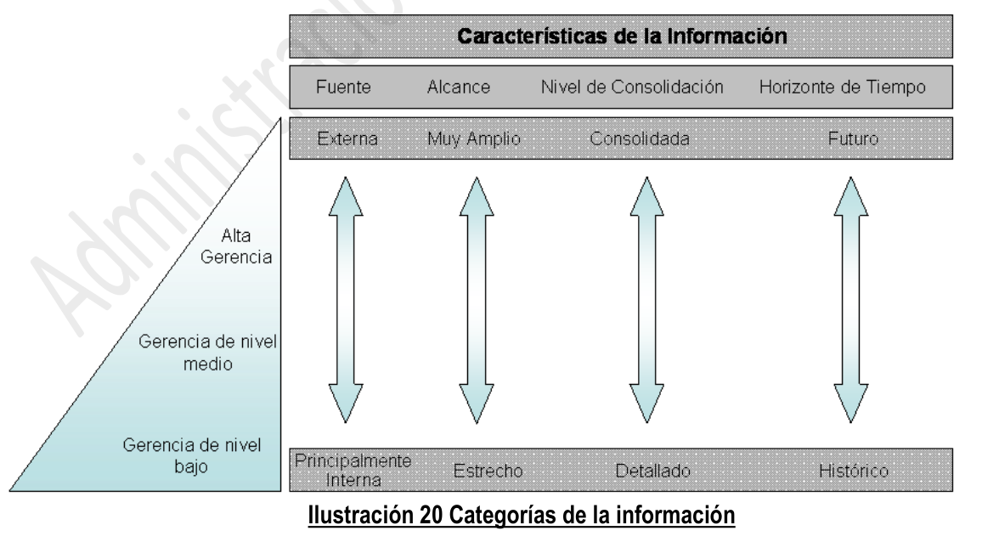
Instalación de la tecnología: elegir hardware, software y comunicaciones después de definir las necesidades de información, no antes. CRM (Customer Relationship Management) para fortalecer relaciones con clientes; SCM (Supply Chain Management) para inventario y distribución; ERP (Enterprise Resource Planning) integra el flujo de información de finanzas, operaciones, marketing, logística, comercial y recursos humanos. Business Intelligence (BI): acceso a información relevante para identificar oportunidades, detectar riesgos y competir, tomando decisiones con menor incertidumbre y siendo proactivos; componentes: ETL (extracción, transformación y procesamiento), Datawarehouse, aplicaciones de análisis (Q&R, OLAP) y cuadros de mando integrales.
Tablero de Control (Tablero de Comando, Cuadro de Mando, "Balanced Scorecard"): herramienta de gestión formada por un conjunto de indicadores en tiempo real que permite conocer la situación de la empresa o de un sector de un golpe de vista, para evaluar resultados y mejorar la gestión; la Cátedra reservaría "Balanced Scorecard" para el Tablero Integral. Ventajas: comunicar y vincular objetivos e indicadores, incrementar la retroalimentación, planificar y alinear iniciativas, transformar la estrategia y aclarar la visión. Conceptos básicos: visión (fuerza intangible compartida sobre el futuro), metas estratégicas, factores para el éxito (críticos o clave), indicadores estratégicos (variables que miden los factores clave), plan de acción y perspectivas. Cuatro perspectivas: cliente (¿cómo aparecer ante los clientes?), económico-financiera (¿cómo aparecer ante los accionistas?), procesos internos (¿en qué procesos ser excelentes?) e innovación y aprendizaje (¿cómo sustentar la capacidad de cambiar?). Tipos: a) Operativo, seguimiento al menos diario de un sector o proceso para decisiones operativas; es herramienta para dirigir con perspectiva operativa, no para operar. b) Directivo, resultados internos de toda la empresa a corto plazo, por áreas clave; recomendable cuando no hay uniformidad de información (islas de poder), hay sobrecarga de datos, se quiere ampliar la visión y alinear la información con la estrategia. c) Estratégico, información interna y externa sobre el posicionamiento a largo plazo, para la alta dirección y quienes miran desde afuera (directorio, accionistas, analistas); es mecanismo de control y realimentación, enfrenta la incertidumbre, promueve la Calidad Total y el pensamiento estratégico. d) Integral (TCI), consolidación de los tres en una sola herramienta tecnológica. La información de los tableros es para dirigir, no para operar.
Aprendizaje estratégico: se apoya en dos pilares, leer correctamente las interrelaciones causa-efecto entre indicadores (medir satisfacción de empleados, actuar, mejorar productividad e impactar en el cliente) y los activos intangibles (capital intelectual, procesos, flexibilidad, capacidad innovadora; la Cátedra agrega cultura y cohesión moral). Comparar expectativas con realidades permite validar las presunciones del planeamiento y replanificar. Proceso de elaboración: 1) identificar áreas clave o temas relevantes, evitando la división por funciones, con "nombre y apellido" ("posición comercial", no "comercial"); 2) definir indicadores clave, índices o ratios, que pueden ser reactivos o de efecto (retrospectivos, resultados obtenidos) o productivos o de causa (preventivos, líderes, anticipan resultados). Para cada indicador se define período, apertura (niveles de desagregación), frecuencia de actualización, referencia (estándar, historia, presupuesto, meta), gráfico, responsable de monitoreo (informa al nivel superior ante sorpresas; distinto del responsable del resultado) y parámetro de alarma (niveles preocupantes, "números rojos"). El tablero evalúa a la empresa o sector, no al responsable; debe incorporarse de arriba hacia abajo y, si la alta dirección no lo usa, cae en desuso. Dificultades: resistencia a la tecnología, dificultad para codificar la estrategia, miedo a la difusión y brecha entre diseñadores y usuarios; recomendaciones: tableros de alto impacto adecuados a la madurez organizacional, evaluar factibilidad, generar valor agregado, implementar en pasos cortos, niveles de acceso, y sobre todo apoyar y capacitar. Limitaciones: refleja solo información cuantitativa, evalúa situaciones y no responsables, no focaliza totalmente la acción directiva, no refleja toda la estrategia, no identifica causalidades (están en la cabeza de los directivos) y no reemplaza el juicio directivo. Conclusión: medir por medir no agrega valor; la diferencia está en actuar; no sirve planear sin control, y los controles no sirven sin medidas correctivas.
↑ Volver al listadoXVICRISIS Y CAMBIO EN LAS ORGANIZACIONES
Lema del capítulo: "en los momentos de crisis, solo la imaginación es más importante que el conocimiento" (Einstein). Crisis: consecuencia de una modificación repentina que provoca desequilibrio e incertidumbre; sensación de perturbación, obnubilación y ausencia de soluciones visualizables; sinónimo de ruptura, inestabilidad y cambios súbitos. Afecta la gobernabilidad e integridad de la organización, pone en peligro fines y medios, tiene baja previsibilidad, efectos rápidos y tiempos reducidos para decidir. Suárez: las crisis revelan las verdades ocultas de la organización (relaciones, vínculos, modos de pensar y hacer) y son uno de sus analizadores más importantes. Tipos (Suárez, no limitativo): crisis de sucesión en empresas familiares, de imagen y reputación, por productos tóxicos, por obsolescencia tecnológica, por catástrofes naturales y por pérdida de competitividad. La Cátedra: la pérdida de competitividad puede ser autónoma (mala administración: estrategias comerciales inadecuadas, altos costos, mal manejo financiero, fallas de control, personal no capacitado) o por factores del mercado (importaciones, monopolios), y es además el desembocadero de todas las otras causas no conjuradas a tiempo.
Dimensiones centrales del concepto de crisis. Anomia: ausencia de normas sociales, los individuos pierden los referentes ("el nombre de las cosas"); se manifiesta en el debilitamiento de los elementos reguladores y en la incongruencia entre principios estructurales y prácticas no regulables. Comportamientos típicos en crisis (modos de adaptación a fines y medios): conformismo (acepta acríticamente medios y fines), innovación (acepta la misión y los fines, propone caminos alternativos), ritualismo (no comparte los fines pero adhiere a los medios estereotipados, "personalidad burocrática"), escapismo (abandona física o psicológicamente, sin adhesión a medios ni fines) y rebelión creativa (visión proactiva, propone fines y medios diferentes). Percepción de desintegración, desestructuración y daño grave, con alta probabilidad, para directivos, personal y la organización; fuertes elementos de entropía. Falta de medios viables: si las soluciones se ven de inmediato y tienen consenso, es un problema, no una crisis. El tiempo como factor central: aceleración de las estructuras temporales, sobrecarga de demandas sobre los roles decisionales, "estrés de rol" y "estrés organizacional", sensación de urgencia, tensión y ansiedad. La crisis puede ser sorpresiva por dinámicas naturales poco conocidas o por negar peligros latentes; actúa en los niveles orgánico, psicológico, social y cultural. Es un fenómeno agudo, no crónico, transitorio: se sale fortalecido por nuevas oportunidades o la organización desaparece; si se cristaliza o institucionaliza deja de ser crisis y es vida vegetativa.
Charles Hermann (1963) construyó una matriz, reformulada como cubo (ilustración 21), que tipifica cada situación combinando el tiempo disponible para decidir, el grado de anticipación y la amplitud de la amenaza. Gobernabilidad: capacidad de actuar con eficiencia y eficacia en la toma de decisiones; en la crisis se necesita decidir rápido sobre temas importantes, pero la característica es la indecisión. La pérdida de referentes y la sobrecarga alteran la capacidad de discriminar situaciones, discernir soluciones y juzgar conductas; dominan la confusión y la parálisis, las reglas y decisiones preexistentes quedan en suspenso y crece la ingobernabilidad. Etapas de una crisis: 1) sorpresa, incredulidad, desconcierto y parálisis por indecisión, repitiendo conductas ya inconsistentes y agravando la crisis; 2) crece la ansiedad, se percibe un peligro sin comprender sus causas, conductas defensivas, sospechas, culpas, recortes improvisados, solo se ve el presente; 3) toma de conciencia de los cambios y de las pérdidas no recuperables (capital de trabajo, clientes, relaciones), análisis de causas, aceptación del esfuerzo y del marco conceptual obsoleto; 4) resignación y aceptación que abren el análisis y diagnóstico situacional, y nuevo impulso emprendedor: redefinir los negocios, evaluar puntos fuertes y débiles, recuperar la creatividad y el empuje fundacional sofocados por rutinas y urgencias financieras, recrear o refundar la empresa. Conclusión: la crisis transparenta situaciones y oportunidades antes veladas, "hace surgir la verdad de lo que está oculto"; de ella puede nacer una mística del cambio y las amenazas externas pueden ser palanca de oportunidades internas. El ideograma chino de "crisis" combina "peligro" y "oportunidad": la oportunidad se aprovecha si se actúa rápido y a la vez con tranquilidad.
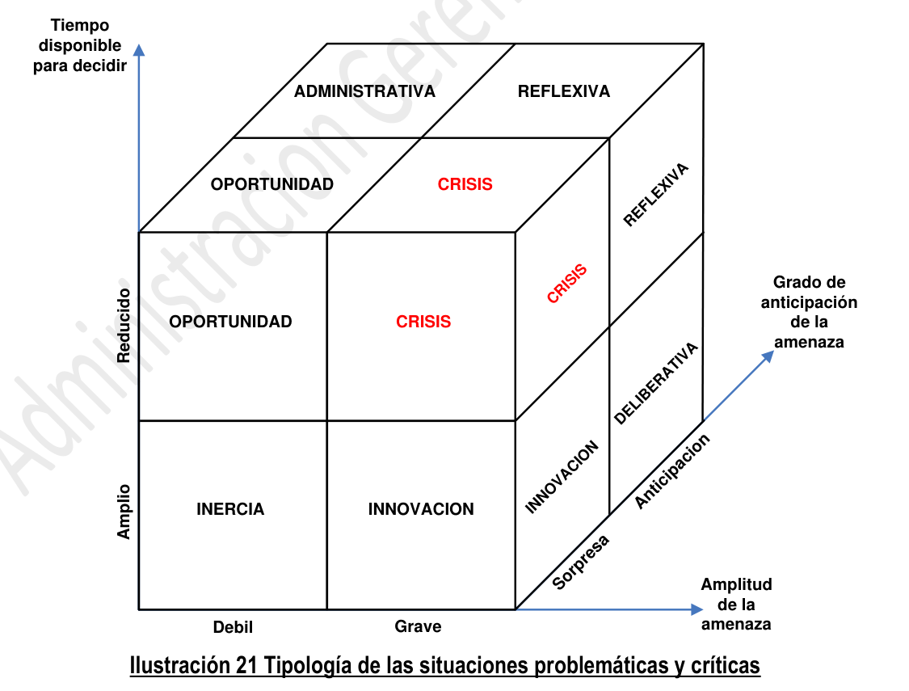